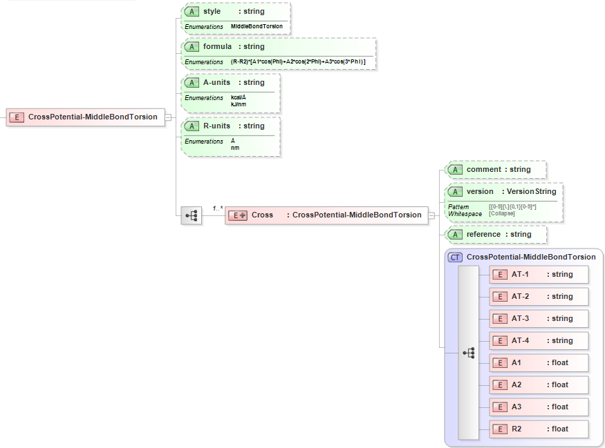

7.5. Cross: Middle-Bond-Torsion¶
7.5.1. Functional Form¶
The Middle-Bond-Torsion Cross Potential has the functional form:
\(E=\left( {{R}_{jk}}-{{R}_{2,jk}} \right)\left[ {{A}_{1,ijkl}}\cos \left( {{\phi }_{ijkl}} \right)+{{A}_{2,ijkl}}\cos \left( 2{{\phi }_{ijkl}} \right)+{{A}_{3,ijkl}}\cos \left( 3{{\phi }_{ijkl}} \right) \right]\)
This term is part of the Class2 Dihedral Potential style.
The force-field parameters for this potential and units are given by:
Equation Symbol |
Parameter Definition |
Units |
\(A_{1,ijkl}\) |
Cosine term coefficient for atoms [i,j,k,l] |
energy/length |
\(A_{2,ijkl}\) |
Cosine term coefficient for atoms [i,j,k,l] |
energy/length |
\(A_{3,ijkl}\) |
Cosine term coefficient for atoms [i,j,k,l] |
energy/length |
\(R_{2,jk}\) |
Equilibrium bond length for atoms [j,k] |
length |
7.5.2. XML Schema¶
The XML schema for the Middle-Bond-Torsion Cross Potential has the following representation (design mode representation using Liquid XML Studio):
The relationship between the equation symbols and XML schema notations are given by:
Parameter Definition |
Equation Symbol |
Schema Notation |
Atom type of atom [i] |
\(i\) |
AT-1 |
Atom type of atom [j] |
\(j\) |
AT-2 |
Atom type of atom [k] |
\(k\) |
AT-3 |
Atom type of atom [l] |
\(l\) |
AT-4 |
Cosine term coefficient for atoms [i,j,k,l] |
\(A_{1,ijkl}\) |
A1 |
Cosine term coefficient for atoms [i,j,k,l] |
\(A_{2,ijkl}\) |
A2 |
Cosine term coefficient for atoms [i,j,k,l] |
\(A_{3,ijkl}\) |
A3 |
Equilibrium bond length for atoms [j,k] |
\(R_{2,jk}\) |
R2 |
The general attributes (describing the entire data set) are given by:
General Attributes |
Cardinality |
Value/Definition |
style |
Fixed |
MiddleBondTorsion |
formula |
Fixed |
(R-R2)*[A1*cos(Phi)+A2*cos(2*Phi)+A3*cos(3*Phi)] |
A-units |
Required |
Enumerations specified in schema |
R-units |
Required |
Enumerations specified in schema |
The specific attributes (attached to each set of parameters) are given by:
Specific Attributes |
Cardinality |
Value/Definition |
comment |
Optional |
Comment attached to parameter set |
version |
Optional |
Version number of parameter set |
reference |
Optional |
Reference attached to parameter set |
Note that an XML document will be rejected from being entered into the WebFF database if a required attribute is left unspecified.